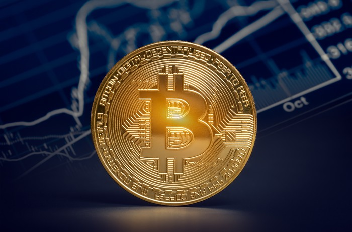

Maturski rad
Šta je kriptovaluta?
Kriptovaluta je sredstvo razmene koje koristi kriptografiju za sigurnost transakcija i kontrolisanje stvaranja dodatnih jedinica valute. Smatra se vrstom digitalnih valuta. Ono što je kod kriptovaluta posebno zanimljivo je da njih niti izdaje, niti kontroliše centralna banka, kao ni bilo koja druga institucija. Kriptovalute uglavnom kreiraju njihovi korisnici kroz proces koji je poznat kao "rudarenje". Prva decentralizovana kriptovaluta je Bitkoin, koji se pojavio 2009. godine. Od tada su se pojavile brojne druge kriptovalute. Podatak iz Maja 2018. pokazuje da se na berzama trguje sa preko 1600 kriptovaluta.
Bitcoin
Bitkoin (Bitcoin) je digitalna imovina i platni sistem koji je predstavio anonimni programer pod pseudonimom Satoši Nakamoto. Prvi put se kao ideja pojavljuje 31. Oktobra 2008., a kao otvoreni softver se pojavio u januaru 2009, kad je i pocela emisija bitkoina. U pitanju je decentralizovana, distribuirana, pseudo-anonimna platna peer-to-peer mreža koja funkcioniše pomocu kompleksnog algoritma, a ujedno i valuta koju ta mreža koristi. Transakcije su verifikovane pomocu mrežnih cvorova i zapisane su u glavnu knjigu transakcija koja se zove blokcejn (Blockchain). Novi bitkoini su nagrada za obradu transakcija korisnicima ukljucenim u aktivnosti održavanja bitkoin mreže (proces poznat kao rudarenje). Bitkoini se osim rudarenjem mogu kupiti novcem na za to predvidenim berzama i menjacnicama ili se mogu dobiti u zamenu za robu i usluge. Mogu se koristiti za kupovinu i prodaju dobara, za slanje novca ljudima ili organizacijama itd. Bitkoini se takode mogu i kupovati, prodavati i menjati, baš kao i ostale valute. Jedina razlika bitkoina u odnosu na tradicionalne valute je što je on potpuno virtualan. Dakle, ne postoji nikakav fizicki opipljiv novac niti digitalne kovanice.

Blockchain
Blokcein je registar svih transakcija koje su se ikad desile u bitkoinovom sistemu. To samo po sebi nije ništa spektakularno, jer svaki sistem u kojem se vrše neka placanja vodi evidenciju o tim transakcijama i cuva ih kao neku bazu podataka. Ono što je kod blokceina velika inovacija je nacin na koji se informacije o transakcijama šalju i skladište.
Podimo od samog imena. “Blockchain” je sastavljen od reci “Block” (blok) i “chain” (lanac). Dakle, bukvalno prevedeno, blokcein je lanac blokova. Naime, kod bitkoina se transakcije pakuju u blokove, a blokovi se vezuju u lanac. Za vezivanje blokova koristi se kriptografija, preciznije HEŠ (HASH) funkcija, na nacin da je nemoguce promeniti sadržaj jednog bloka, a da se ne promeni sadržaj svih blokova koji idu nakon njega. Ovo je izuzetno bitno svojstvo blokceina jer obezbeduje nepromenjivost podataka koji su upisani u blokcein.
Bitkoin je decentralizovan, što znaci da ne postoji centralni server ili bilo šta slicno, na šta se korisnici povezuju. Svi korisnici bitkoina su povezani u peer-to-peer mrežu i svaki korisnik predstavlja jedno cvorište (node) te mreže. Pošto je peer-to-peer mreža takva da svaki korisnik može biti direktno povezan samo sa nekoliko drugih korisnika, to znaci da je sa svima ostalima povezan indirektno. Informacija kroz peer-to-peer mrežu putuje tako što svaki ucesnik šalje poruku samo onima sa kojima je direktno povezan, zatim svaki od njih tu poruku dalje šalje onima sa kojima je direktno povezan i tako sve dok poruka ne dode do svih ucesnika u mreži. Neka od cvorišta (takva cvorišta se nazivaju “full node”) u mreži imaju na svom hard disku kompletan blokcein (bazu svih transakcija koje su se ikada desile) i takvih cvorišta je na hiljade. Pošto svi oni stalno medusobno komuniciraju, uvek proveravaju da li se njihova kopija blokceina slaže sa ostalima. Ako se ne slaže, oni automatski ažuriraju svoju verziju tako da se slaže sa ostatkom mreže. Svako cvorište u bitkoin mreži je zapravo posrednik koji transakciju proveri i prosledi dalje sve dok ona ne dode do svih cvorišta u mreži. Kad su je svi proverili i transakcija je došla do svih u mreži, ona ispunjava uslov da se ubaci u blok i time postane deo blokceina.
Šta svi ti posrednici zapravo proveravaju?
- Da li pošiljalac ima na svojoj bitkoin adresi dovoljno bitkoina da bi mogao da izvrši transakciju?
- Da li je adresa primaoca validna?
- Da li je potpis pošiljaoca validan?
Kako oni mogu sve to da provere?
“Full node” cvorišta u svakom trenutku znaju tacno na kojoj adresi koliko bitkoina ima i koje su adrese validne, a koje nisu. Ako transakcija prode sve 3 provere, ona se prosleduje dalje kroz peer-to-peer mrežu dok ne dode do svih. Iako sve ovo deluje kao veoma kompleksan proces, u praksi je bitkoin transakciji potrebno manje od 1 sekunde da dode do svih cvorišta u bitkoin mreži. U slucaju da su posrednici nepouzdani može doci do problema zbog falsifikovanja podataka. Ovaj problem je rešen povecanjem broja posrednika. Ako bi neki od ucesnika u bitkoin mreži pokušao da promeni transakciju koju je primio, pre nego je prosledi dalje, ne bi se desilo ništa, zbog nacina na koji mreža funkcioniše. Ucesnici u mreži konstanto komuniciraju i porede svoje kopije baza sa drugima. Ako primete da se njihova kopija razlikuje od drugih, oni svoju kopiju prilagode tako da bude ista. Medutim, svaki od ucesnika je povezan direktno sa nekoliko drugih. Ako od jednog od njih dobija jednu informaciju, a od svih ostalih drugu, on ce tog jednog ucesnika jednostavno ignorisati, tako da izmenjena informacija ne može da propagira kroz mrežu. Dok god je broj falsifikata ispod 50%, cela mreža je bezbedna, jer su cvorišta programirana tako da stav vecine prihvataju kao tacan.